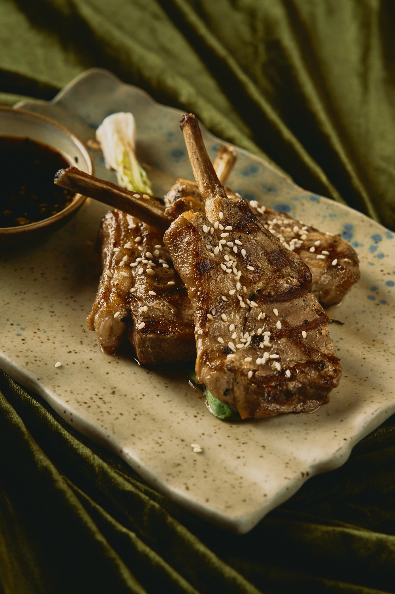
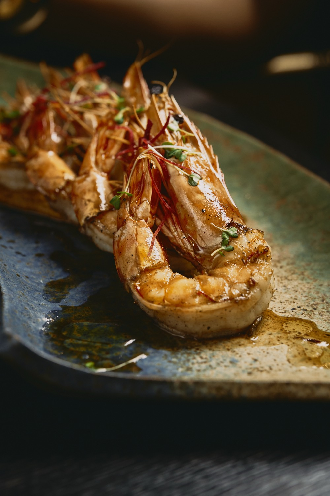

Weekly Sushi Nights
Omakase-style counter service and signature rolls, hosted every week by the sushi pass.
Japanese · Pan-Asian · Wuse II, Abuja
Experience Marks. Mark the taste.
Japanese and Pan-Asian cuisine blend seamlessly with fine dining — a refined culinary journey where every dish is crafted as an artful masterpiece.
— Portfolio
Signature plates, craft cocktails and moments from the kitchen — a visual introduction to what waits at the table.


— Philosophy
Marks draws a single line from a Kyoto counter to a Bangkok night-market, from Seoul's banchan to the charcoal pits of Hokkaido. Every plate begins with Japanese discipline — pristine fish, considered knife-work, restraint — and answers with the warmth of the wider region.
A refined culinary journey served seven days a week, where every dish is crafted as an artful masterpiece.
— Experiences
Omakase-style counter service and signature rolls, hosted every week by the sushi pass.
Warm Abuja afternoons, Pan-Asian small plates, long cocktails — seasonal party programming through the year.
Private dining and banquet rooms available for parties, supper clubs and celebrations — up to twenty guests at the chef's table.
— Reservations
Tables are available seven days a week from 12 noon. Private dining & banquet rooms on request.
— Hours
Monday – Sunday
From 12 noon
Lunch & dinner, seven days a week
— Address
163 Adetokunbo
Ademola Crescent
Wuse II, FCT, Abuja, Nigeria